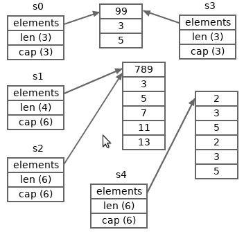

Arrays, Slices and Maps in Go
Strictly speaking, there are three kinds of first-class citizen
container types in Go, array, slice and map.
Sometimes, strings and channels can also be viewed as container types,
but this article will not touch the two kinds of types.
All container types talked about in the current article are
arrays, slices and maps.
There are many container related details in Go.
This article will list them one by one.
Simple Overview of Container Types and Values
Each value of the three kinds of types is used to
store a collection of element values.
The types of all the elements stored in a container value are identical.
The identical type is called the element type of
(the container type of) the container value.
Each element in a container has an associated key.
An element value can be accessed or modified through its associated key.
The key types of map types must be
comparable types.
The key types of array and slice types are all the built-in type int.
The keys of the elements of an array or slice are non-negative integers
which mark the positions of these elements in the array or slice.
The non-negative integer keys are often called indexes.
Each container value has a length property,
which indicates how many elements are stored in that container.
The valid range of the integer keys of an array or slice value is
from zero (inclusive) to the length (exclusive) of the array or slice.
For each value of a map type, the key values of that map value can be
an arbitrary value of the key type of the map type.
There are also many differences between the three kinds of container types.
Most of the differences originate from the differences between
the value memory layouts of the three kinds of types.
From the last article, value parts,
we learned that an array value consists of only one direct part,
however a slice or map value may have an underlying part,
which is referenced by the direct part of the slice or map value.
Elements of an array or a slice are both stored
contiguously in a continuous memory segment.
For an array, the continuous memory segment
hosts the direct part of the array.
For a slice, the continuous memory segment
hosts the underlying indirect part of the slice.
The map implementation of the standard Go compiler/runtime
adopts the hashtable algorithm.
So all elements of a map are also stored in an underlying
continuous memory segment, but they may be not contiguous.
There may be many holes (gaps) within the continuous memory segment.
Another common map implementation algorithm is the binary tree algorithm.
Whatever algorithm is used, the keys associated with the elements of a map
are also stored in (the underlying parts of) the map.
We can access an element through its key.
The time complexities of element accesses on all container values
are all
O(1),
though, generally map element accesses are several times
slower than array and slice element accesses.
But maps have two advantages over arrays and slices:
-
the key types of maps can be any comparable types.
-
maps consume much less memory than arrays and slices if most elements are zero values.
From the last article, we have learned that the underlying parts of a value
will not get copied when the value is copied.
In other words, if a value has underlying parts,
a copy of the value will share the underlying parts with the value.
This is the root reason of many behavior differences
between array and slice/map values.
These behavior differences will be introduced below.
Literal Representations of Unnamed Container Types
The literal representations of the three kinds of unnamed container types:
- array types:
[N]T
- slice types:
[]T
- map types:
map[K]T
where
-
T is an arbitrary type.
It specifies the element type of a container type.
Only values of the specified element type can be stored
as element values of values of the container type.
-
N must be a non-negative integer constant.
It specifies the number of elements stored in any value of an array type,
and it can be called the length of the array type.
This means the length of an array type is the inherent part of the array type.
For example, [5]int and [8]int
are two distinct array types.
-
K is an arbitrary comparable type.
It specifies the key type of a map type.
Most types in Go are comparable, incomparable types are
listed here.
Here are some container type literal representation examples:
const Size = 32
type Person struct {
name string
age int
}
/* Array types */
[5]string
[Size]int
// Element type is a slice type: []byte
[16][]byte
// Element type is a struct type: Person
[100]Person
/* Slice types *
[]bool
[]int64
// Element type is a map type: map[int]bool
[]map[int]bool
// Element type is a pointer type: *int
[]*int
/* Map types */
map[string]int
map[int]bool
// Element type is an array type: [6]string
map[int16][6]string
// Element type is a slice type: []string
map[bool][]string
// Element type is a pointer type: *int8,
// and key type is a struct type.
map[struct{x int}]*int8
The sizes of all slice types are the same.
The sizes of all map types are also the same.
The size of an array type depends on its length and the size of its element type.
The size of a zero-length array type or an array type
with a zero-size element type is zero.
Container Value Literals
Like struct values, container values can also be represented
with composite literals,
T{...}, where
T denotes container type
(except the zero values of slice and map types).
Here are some examples:
// An array value containing four bool values.
[4]bool{false, true, true, false}
// A slice value which contains three words.
[]string{"break", "continue", "fallthrough"}
// A map value containing some key-value pairs.
map[string]int{"C": 1972, "Python": 1991, "Go": 2009}
Each key-element pair between the braces of a map composite literal is also called an entry.
There are several variants for array and slice composite literals:
// The followings slice composite literals
// are equivalent to each other.
[]string{"break", "continue", "fallthrough"}
[]string{0: "break", 1: "continue", 2: "fallthrough"}
[]string{2: "fallthrough", 1: "continue", 0: "break"}
[]string{2: "fallthrough", 0: "break", "continue"}
// The followings array composite literals
// are equivalent to each other.
[4]bool{false, true, true, false}
[4]bool{0: false, 1: true, 2: true, 3: false}
[4]bool{1: true, true}
[4]bool{2: true, 1: true}
[...]bool{false, true, true, false}
[...]bool{3: false, 1: true, true}
In the last two literals, the ...s mean we want to let compilers
deduce the lengths for the corresponding array values.
From the above examples, we know that element indexes (keys) are optional
in array and slice composite literals. In an array or slice composite literal,
-
if an index is present,
it is not needed to be a typed value of the key type
int,
but it must be a non-negative constant representable as a value of type int.
And if it is typed, its type must be a basic integer type.
-
an element which index is absent uses the previous element's index plus one as its index.
-
if the index of the first element is absent, its index is zero.
The keys in a map literal can be absent, they can be non-constants.
var a uint = 1
var _ = map[uint]int {a : 123} // okay
// The following two lines fail to compile,
// for "a" is not a constant key/index.
var _ = []int{a: 100} // error
var _ = [5]int{a: 100} // error
Constant keys in one specific composite literal can't be duplicate.
Literal Representations of Zero Values of Container Types
Like structs, the zero value of an array type A can be represented
with the composite literal A{}.
For example, the zero value of type [100]int
can be denoted as [100]int{}.
All elements stored in the zero value of an array type
are zero values of the element type of the array type.
Like pointer types, zero values of all slice and map types are represented
with the predeclared nil.
BTW, there are some other kinds of types whose zero values are also represented by nil,
including later to be introduced function, channel and interface types.
When an array variable is declared without being specified an initial value,
memory has been allocated for the elements of the zero array value.
The memory for the elements of a nil slice or map value has not been allocated yet.
Please note, []T{} represents a blank slice value (with zero elements)
of slice type []T, it is different from []T(nil).
The same situation is for map[K]T{} and map[K]T(nil).
Composite Literals Are Unaddressable but Can Be Taken Addresses
We have learned that
struct composite literals
can be taken addresses directly before.
Container composite literals have no exceptions here.
Example:
package main
import "fmt"
func main() {
pm := &map[string]int{"C": 1972, "Go": 2009}
ps := &[]string{"break", "continue"}
pa := &[...]bool{false, true, true, false}
fmt.Printf("%T\n", pm) // *map[string]int
fmt.Printf("%T\n", ps) // *[]string
fmt.Printf("%T\n", pa) // *[4]bool
}
Nested Composite Literals Can Be Simplified
If a composite literal nested many other composite literals, then those nested
composited literals can simplified to the form {...}.
For example, the slice value literal
// A slice value of a type whose element type is
// *[4]byte. The element type is a pointer type
// whose base type is [4]byte. The base type is
// an array type whose element type is "byte".
var heads = []*[4]byte{
&[4]byte{'P', 'N', 'G', ' '},
&[4]byte{'G', 'I', 'F', ' '},
&[4]byte{'J', 'P', 'E', 'G'},
}
can be simplified to
var heads = []*[4]byte{
{'P', 'N', 'G', ' '},
{'G', 'I', 'F', ' '},
{'J', 'P', 'E', 'G'},
}
The array value literal in the following example
type language struct {
name string
year int
}
var _ = [...]language{
language{"C", 1972},
language{"Python", 1991},
language{"Go", 2009},
}
can be simplified to
var _ = [...]language{
{"C", 1972},
{"Python", 1991},
{"Go", 2009},
}
And the map value literal in the following example
type LangCategory struct {
dynamic bool
strong bool
}
// A value of map type whose key type is
// a struct type and whose element type
// is another map type "map[string]int".
var _ = map[LangCategory]map[string]int{
LangCategory{true, true}: map[string]int{
"Python": 1991,
"Erlang": 1986,
},
LangCategory{true, false}: map[string]int{
"JavaScript": 1995,
},
LangCategory{false, true}: map[string]int{
"Go": 2009,
"Rust": 2010,
},
LangCategory{false, false}: map[string]int{
"C": 1972,
},
}
can be simplified to
var _ = map[LangCategory]map[string]int{
{true, true}: {
"Python": 1991,
"Erlang": 1986,
},
{true, false}: {
"JavaScript": 1995,
},
{false, true}: {
"Go": 2009,
"Rust": 2010,
},
{false, false}: {
"C": 1972,
},
}
Please notes, in the above several examples, the comma following the last item
in each composite literal can't be omitted.
Please read the line break rules in Go
for more information later.
Compare Container Values
As which has mentioned in the article
overview of
Go type system, map and slice types are incomparable types.
So map and slice types can't be used as map key types.
Although a slice or map value can't be compared with another slice or map value
(or itself), it can be compared to the bare untyped nil identifier
to check whether or not the slice or map value is a zero value.
Most array types are comparable,
except the ones whose element types are incomparable types.
When comparing two array values, each pair of the corresponding elements will be compared.
We can think element pairs are compared by their index order.
The two array values are equal only if all of their corresponding elements are equal.
The comparison stops in advance when a pair of elements is found unequal
or a panic occurs.
Example:
package main
import "fmt"
func main() {
var a [16]byte
var s []int
var m map[string]int
fmt.Println(a == a) // true
fmt.Println(m == nil) // true
fmt.Println(s == nil) // true
fmt.Println(nil == map[string]int{}) // false
fmt.Println(nil == []int{}) // false
// The following lines fail to compile.
/*
_ = m == m
_ = s == s
_ = m == map[string]int(nil)
_ = s == []int(nil)
var x [16][]int
_ = x == x
var y [16]map[int]bool
_ = y == y
*/
}
Check Lengths and Capacities of Container Values
Besides the length property, each container value also has a capacity property.
The capacity of an array is always equal to the length of the array.
The capacity of a non-nil map can be viewed as unlimited.
So, in practice, only capacities of slice values are meaningful.
The capacity of a slice is always equal to or larger than the length of the slice.
The meaning of slice capacities will be explained in the section after next.
We can use the built-in len function to get the length of
a container value, and use the built-in cap function to
get the capacity of a container value.
Each of the two functions returns an int typed result
or an untyped result which default type is int,
depending on whether or not the passed argument is a constant expression.
As the capacity of any map value is unlimited,
the built-in cap function doesn't apply to map values.
The length and capacity of an array value can never change.
The lengths and capacities of all values of an array type always equal to the length of the array type.
The length and capacity of a slice value may change at run time.
So slices can be viewed as dynamic arrays.
Slices are much more flexible than arrays
and are used more popularly than arrays in practice.
Example:
package main
import "fmt"
func main() {
var a [5]int
fmt.Println(len(a), cap(a)) // 5 5
var s []int
fmt.Println(len(s), cap(s)) // 0 0
s, s2 := []int{2, 3, 5}, []bool{}
fmt.Println(len(s), cap(s)) // 3 3
fmt.Println(len(s2), cap(s2)) // 0 0
var m map[int]bool
fmt.Println(len(m)) // 0
m, m2 := map[int]bool{1: true, 0: false}, map[int]int{}
fmt.Println(len(m), len(m2)) // 2 0
}
The length and capacity of each slice shown in the above specified example value are equal.
This is not true for every slice value.
We will use some slices whose respective lengths and capacities are not equal in the following sections.
Retrieve and Modify Container Elements
The element associated to key k stored in a container value
v is represented with the element indexing syntax form v[k].
For a use of
v[k], assume
v is an array or slice,
-
if
k is a constant, then it must satisfy
the requirements described above
for the indexes in container composite literals.
In addition, if v is an array, the
k must be smaller than the length of the array.
-
if
k is a non-constant value, it must be a value of any basic integer type.
In addition, it must be larger than or equal to zero and smaller than len(v),
otherwise, a run-time panic will occur.
-
if
v is a nil slice,
a run-time panic will occur.
For a use of
v[k], assume
v is a map,
then
k must be assignable to values of
the element type of the map type, and
-
if
k is an interface value whose dynamic type is incomparable,
a panic will occur at run time.
-
if
v[k] is used as a destination value in an assignment and v is a nil map,
a panic will occur at run time.
-
if
v[k] is used to retrieve the element value corresponding key k in map v,
then no panics will occur, even if v is a nil map.
(Assume the evaluation of k will not panic.)
-
if
v[k] is used to retrieve the element value corresponding key k in map v,
and the map v doesn't contain an entry with
key k, v[k] results a zero value of
the element type of the corresponding map type of v.
Generally, v[k] is viewed as a single-value
expression. However, when v[k] is used as the only source
value expression in an assignment, it can be viewed as a multi-value
expression and result a second optional untyped boolean value,
which indicates whether or not the map v contains an entry
with key k.
An example of container element accesses and modifications:
package main
import "fmt"
func main() {
a := [3]int{-1, 0, 1}
s := []bool{true, false}
m := map[string]int{"abc": 123, "xyz": 789}
fmt.Println (a[2], s[1], m["abc"]) // retrieve
a[2], s[1], m["abc"] = 999, true, 567 // modify
fmt.Println (a[2], s[1], m["abc"]) // retrieve
n, present := m["hello"]
fmt.Println(n, present, m["hello"]) // 0 false 0
n, present = m["abc"]
fmt.Println(n, present, m["abc"]) // 567 true 567
m = nil
fmt.Println(m["abc"]) // 0
// The two lines fail to compile.
/*
_ = a[3] // index 3 out of bounds
_ = s[-1] // index must be non-negative
*/
// Each of the following lines can cause a panic.
_ = a[n] // panic: index out of range
_ = s[n] // panic: index out of range
m["hello"] = 555 // panic: assign to entry in nil map
}
Recall the Internal Structure Definition of Slice Types
To understand slice types and values better and explain slices easier,
we need to have an impression on the internal structure of slice types.
From the last article,
value parts,
we learned that the internal structure of slice types
defined by the standard Go compiler/runtime is like
type _slice struct {
elements unsafe.Pointer // referencing underlying elements
len int // length
cap int // capacity
}
The internal structure definitions used by other compilers/runtimes
implementations may be not the exact same but would be similar.
The following explanations are based on the official slice implementation.
The above shown internal structure explains the memory layouts of
the direct parts of slice values.
The len field of the direct part of a slice indicates
the length of the slice, and the cap field indicates
the capacity of the slice.
The following picture depicts one possible memory layout of a slice value.
Although the underlying memory segment which hosts the elements of a slice
may be very large, the slice may be only aware of a sub-segment of the
memory segment. For example, in the above picture, the slice is only
aware of the middle grey sub-segment of the whole memory segment.
For the slice depicted in the above picture, the elements from
index len to index cap (exclusive)
don't belong to the elements of the slice.
They are just some redundant element slots for the depicted slice,
but they may be effective elements of other slices or another array.
The next section will explain how to append elements to a base slice and yield
a new slice by using the built-in append function.
The result slice of an append function call may share starting
elements with the base slice or not, depending on the capacity (and length)
of the base slice and how many elements are appended.
When the slice is used as the base slice in an
append function call,
-
if the number of appended elements is larger than the number of
the redundant element slots of the base slice,
a new underlying memory segment will be allocated for the result slice,
thus the result slice and the base slice will not share any elements.
-
otherwise, no new underlying memory segments will be allocated
for the result slice, and the elements of the base slice also
belong to the elements of the result slice.
In other words, the two slices share some elements and all of
their elements are hosted on the same underlying memory segment.
The section after next will show a picture which describes both of
the two possible cases in appending slice elements.
There are more routes which lead to the elements of two slices
are hosted on the same underlying memory segment.
Such as assignments and the below to be introduced subslice operations.
Note, generally, we can't modify the three fields of a slice value individually,
except through the reflection
and unsafe ways.
In other words, generally, to modify a slice value,
its three fields must be modified together.
Generally, this is achieved by assigning another slice value
(of the same slice type) to the slice which needs to be modified.
Container Assignments
If a map is assigned to another map, then the two maps will
share all (underlying) elements.
Appending elements into (or deleting elements from) one map
will reflect on the other map.
Like map assignments, if a slice is assigned to another slice,
they will share all (underlying) elements.
Their respective lengths and capacities equal to each other.
However, if the length/capacity of one slice changes later,
the change will not reflect on the other slice.
When an array is assigned to another array,
all the elements are copied from the source one to the destination one.
The two arrays don't share any elements.
Example:
package main
import "fmt"
func main() {
m0 := map[int]int{0:7, 1:8, 2:9}
m1 := m0
m1[0] = 2
fmt.Println(m0, m1) // map[0:2 1:8 2:9] map[0:2 1:8 2:9]
s0 := []int{7, 8, 9}
s1 := s0
s1[0] = 2
fmt.Println(s0, s1) // [2 8 9] [2 8 9]
a0 := [...]int{7, 8, 9}
a1 := a0
a1[0] = 2
fmt.Println(a0, a1) // [7 8 9] [2 8 9]
}
Append and Delete Container Elements
The syntax of appending a key-element pair (an entry)
to a map is the same as the syntax of modifying a map element.
For example, for a non-nil map value
m,
the following line
m[k] = e
put the key-element pair (k, e) into the map m
if m doesn't contain an entry with key k,
or modify the element value associated with k
if m contains an entry with key k.
There is a built-in
delete function
which is used to delete an entry from a map.
For example, the following line will delete the entry with key
k from the map
m.
If the map
m doesn't contain an entry with key
k,
it is a no-op, no panics will occur,
even if
m is a nil map.
delete(m, k)
An example shows how to append (put) entries to and delete entries from maps:
package main
import "fmt"
func main() {
m := map[string]int{"Go": 2007}
m["C"] = 1972 // append
m["Java"] = 1995 // append
fmt.Println(m) // map[C:1972 Go:2007 Java:1995]
m["Go"] = 2009 // modify
delete(m, "Java") // delete
fmt.Println(m) // map[C:1972 Go:2009]
}
Please note, before Go 1.12, the entry print order of a map is unspecified.
Array elements can neither be appended nor deleted,
though elements of addressable arrays can be modified.
We can use the built-in append function
to append multiple elements into a base slice and result a new slice.
The result new slice contains the elements of the base slice and the appended elements.
Please note, the base slice is not modified by the append function call.
Surely, if we expect (and often in practice), we can assign the result slice
to the base slice to modify the base slice.
There is not a built-in way to delete an element from a slice.
We must use the append function and
the subslice feature introduced below together to achieve this goal.
Slice element deletions and insertions will be demoed in the below
more slice manipulations section.
Here, the following example only shows how to use the append function.
An example showing how to use the
append function:
package main
import "fmt"
func main() {
s0 := []int{2, 3, 5}
fmt.Println(s0, cap(s0)) // [2 3 5] 3
s1 := append(s0, 7) // append one element
fmt.Println(s1, cap(s1)) // [2 3 5 7] 6
s2 := append(s1, 11, 13) // append two elements
fmt.Println(s2, cap(s2)) // [2 3 5 7 11 13] 6
s3 := append(s0) // <=> s3 := s0
fmt.Println(s3, cap(s3)) // [2 3 5] 3
s4 := append(s0, s0...) // double s0 as s4
fmt.Println(s4, cap(s4)) // [2 3 5 2 3 5] 6
s0[0], s1[0] = 99, 789
fmt.Println(s2[0], s3[0], s4[0]) // 789 99 2
}
Note, the built-in append function is a
variadic function.
It has two parameters, the second one is a
variadic parameter.
Variadic functions will be explained in the article after next.
Currently, we only need to know that there are two manners to pass variadic arguments.
In the above example, line 8, line 10 and line 12 use
one manner and line 14 uses the other manner.
For the former manner, we can pass zero or more element values as the variadic arguments.
For the latter manner, we must pass a slice as the only variadic argument and
which must be followed by three dots ....
We can learn how to call variadic functions from the the article after next.
In the above example, line
14 is equivalent to
s4 := append(s0, s0[0], s0[1], s0[2])
line
8 is equivalent to
s1 := append(s0, []int{7}...)
and line
10 is equivalent to
s2 := append(s1, []int{11, 13}...)
For the three-dot ... manner, the append function doesn't
require the variadic argument must be a slice with the same type as the first
slice argument, but their element types must be identical.
In other words, the two argument slices must share the same
underlying type.
In the above program,
-
the
append call at line 8 will allocate a new
underlying memory segment for slice s1,
for slice s0 doesn't have enough redundant element slots
to store the new appended element. The same situation is for the
append call at line 14.
-
the
append call at line 10 will not allocate a new
underlying memory segment for slice s2,
for slice s1 has enough redundant element slots
to store the new appended elements.
So, s1 and s2 share some elements,
s0 and s3 share all elements,
and s4 doesn't share elements with others.
The following picture depicted the statuses of these slices
at the end of the above program.

Please note that, when an append call allocate a new underlying memory segment
for the result slice, the capacity of the result slice is compiler dependent.
For the standard Go compiler, if the capacity of the base slice is small,
the capacity of the result slice will be at least the double of the base slice,
to avoid allocating underlying memory segments frequently when the result slice is
used as the base slices in later possible append calls.
As mentioned above, we can assign the result slice to the base slice
in an
append call to append elements into the base slice.
For example,
package main
import "fmt"
func main() {
var s = append([]string(nil), "array", "slice")
fmt.Println(s) // [array slice]
fmt.Println(cap(s)) // 2
s = append(s, "map")
fmt.Println(s) // [array slice map]
fmt.Println(cap(s)) // 4
s = append(s, "channel")
fmt.Println(s) // [array slice map channel]
fmt.Println(cap(s)) // 4
}
Up to now (Go 1.19), the first argument of an append function
call can't be an untyped nil.
Create Slices and Maps With the Built-in make Function
Besides using composite literals to create map and slice values,
we can also use the built-in make function to create map and slice values.
The built-in make function can't be used to create array values.
BTW, the built-in make function can also be used to create
channels, which will be explained in the article
channels in Go later.
Assume
M is a map type and
n is an integer,
we can use the following two forms to create new maps of type
M.
make(M, n)
make(M)
The first form creates a new empty map which is allocated with enough space to
hold at least n entries without reallocating memory again.
The second form only takes one argument,
in which case a new empty map with enough space to
hold a small number of entries without reallocating memory again.
The small number is compiler dependent.
Note: the second argument n may be negative or zero, in which case it will be ignored.
Assume
S is a slice type,
length and
capacity are two non-negative integers,
length is not larger than
capacity,
we can use the following two forms to create new slices of type
S.
(The types of
length and
capacity are not required to be identical.)
make(S, length, capacity)
make(S, length)
The first form creates a new slice with the specified length and capacity.
The second form only takes two arguments, in which case the capacity of
the new created slice is the same as its length.
All the elements in the result slice of a make function call
are initialized as the zero value (of the slice element type).
An example on how to use the built-in
make function
to create maps and slices:
package main
import "fmt"
func main() {
// Make new maps.
fmt.Println(make(map[string]int)) // map[]
m := make(map[string]int, 3)
fmt.Println(m, len(m)) // map[] 0
m["C"] = 1972
m["Go"] = 2009
fmt.Println(m, len(m)) // map[C:1972 Go:2009] 2
// Make new slices.
s := make([]int, 3, 5)
fmt.Println(s, len(s), cap(s)) // [0 0 0] 3 5
s = make([]int, 2)
fmt.Println(s, len(s), cap(s)) // [0 0] 2 2
}
Allocate Containers With the Built-in new Function
From the article pointers in Go, we learned that
we can also call the built-in new function to allocate
a value of any type and get a pointer which references the allocated value.
The allocated value is a zero value of its type.
For this reason, it is a nonsense to use new function to
create map and slice values.
It is not totally a nonsense to allocate a zero value of an array type
with the built-in new function.
However, it is seldom to do this in practice,
for it is more convenient to use composite literals to allocate arrays.
Example:
package main
import "fmt"
func main() {
m := *new(map[string]int) // <=> var m map[string]int
fmt.Println(m == nil) // true
s := *new([]int) // <=> var s []int
fmt.Println(s == nil) // true
a := *new([5]bool) // <=> var a [5]bool
fmt.Println(a == [5]bool{}) // true
}
Addressability of Container Elements
Following are some facts about the addressabilities of container elements.
-
Elements of addressable array values are also addressable.
Elements of unaddressable array values are also unaddressable.
The reason is each array value only consists of one direct part.
-
Elements of any slice value are always addressable,
whether or not that slice value is addressable.
This is because the elements of a slice are stored in
the underlying (indirect) value part of the slice and the underlying part
is always hosted on an allocated memory segment.
-
Elements of map values are always unaddressable.
Please read this FAQ item for reasons.
For example:
package main
import "fmt"
func main() {
a := [5]int{2, 3, 5, 7}
s := make([]bool, 2)
pa2, ps1 := &a[2], &s[1]
fmt.Println(*pa2, *ps1) // 5 false
a[2], s[1] = 99, true
fmt.Println(*pa2, *ps1) // 99 true
ps0 := &[]string{"Go", "C"}[0]
fmt.Println(*ps0) // Go
m := map[int]bool{1: true}
_ = m
// The following lines fail to compile.
/*
_ = &[3]int{2, 3, 5}[0]
_ = &map[int]bool{1: true}[1]
_ = &m[1]
*/
}
Unlike most other unaddressable values, which direct parts can not be modified,
the direct part of a map element values can be modified,
but can only be modified (overwritten) as a whole.
For most kinds of element types, this is not a big issue.
However, if the element type of map type is an array type or struct type,
things become some counter-intuitive.
From the last article,
value parts, we learned
that each of struct and array values only consists of one direct part.
So
-
if the element type of a map is a struct type,
we can not individually modify each field of an element (which is a struct) of the map.
-
if the element type of a map is an array type,
we can not individually modify each element of an element
(which is an array) of the map.
Example:
package main
import "fmt"
func main() {
type T struct{age int}
mt := map[string]T{}
mt["John"] = T{age: 29} // modify it as a whole
ma := map[int][5]int{}
ma[1] = [5]int{1: 789} // modify it as a whole
// The following two lines fail to compile,
// for map elements can be modified partially.
/*
ma[1][1] = 123 // error
mt["John"].age = 30 // error
*/
// Accesses are okay.
fmt.Println(ma[1][1]) // 789
fmt.Println(mt["John"].age) // 29
}
To make any expected modification work in the above example,
the corresponding map element should be saved in a temporary variable firstly,
then the temporary variable is modified as needed, in the end
the corresponding map element is overwritten by the temporary variable.
For example,
package main
import "fmt"
func main() {
type T struct{age int}
mt := map[string]T{}
mt["John"] = T{age: 29}
ma := map[int][5]int{}
ma[1] = [5]int{1: 789}
t := mt["John"] // a temporary copy
t.age = 30
mt["John"] = t // overwrite it back
a := ma[1] // a temporary copy
a[1] = 123
ma[1] = a // overwrite it back
fmt.Println(ma[1][1], mt["John"].age) // 123 30
}
Note: the just mentioned limit might be lifted later.
Derive Slices From Arrays and Slices
We can derive a new slice from another (base) slice or a base addressable array
by using the subslice syntax forms (Go specification calls them as slice syntax forms).
The process is also often called as reslicing.
The elements of the derived slice and the base array or slice
are hosted on the same memory segment.
In other words, the derived slice and the base array or slice
may share some contiguous elements.
There are two subslice syntax forms (
baseContainer is an array or slice):
baseContainer[low : high] // two-index form
baseContainer[low : high : max] // three-index form
The two-index form is equivalent to
baseContainer[low : high : cap(baseContainer)]
So the two-index form is a special case of the three-index form.
The two-index form is used much more popularly
than the three-index form in practice.
Note, the three-index form is only supported since Go 1.2.
In a subslice expression, the
low,
high and
max indexes must satisfy the following relation requirements.
// two-index form
0 <= low <= high <= cap(baseContainer)
// three-index form
0 <= low <= high <= max <= cap(baseContainer)
Indexes not satisfying these requirements may make the subslice expression
fail to compile at compile time or panic at run time,
depending on the base container type kind and whether or not the indexes are constants.
Note,
-
the
low and high indexes can be both larger than
len(baseContainer), as long as the above relations are all satisfied.
But the two indexes must not be larger than cap(baseContainer).
-
a subslice expression will not cause a panic if
baseContainer
is a nil slice and all indexes used in the expression are zero.
The result slice derived from a nil slice is still a nil slice.
The length of the result derived slice is equal to high - low, and
the capacity of the result derived slice is equal to max - low.
The length of a derived slice may be larger than the base container,
but the capacity will never be larger than the base container.
In practice, for simplicity, we often omitted some indexes in subslice syntax forms.
The omission rules are:
-
if the
low index is equal to zero, it can be omitted,
either for two-index or three-index forms.
-
if the
high is equal to len(baseContainer),
it can be omitted, but only for two-index forms.
-
the
max can never be omitted in three-index forms.
For example, the following expressions are equivalent.
baseContainer[0 : len(baseContainer)]
baseContainer[: len(baseContainer)]
baseContainer[0 :]
baseContainer[:]
baseContainer[0 : len(baseContainer) : cap(baseContainer)]
baseContainer[: len(baseContainer) : cap(baseContainer)]
An example of using subslice syntax forms:
package main
import "fmt"
func main() {
a := [...]int{0, 1, 2, 3, 4, 5, 6}
s0 := a[:] // <=> s0 := a[0:7:7]
s1 := s0[:] // <=> s1 := s0
s2 := s1[1:3] // <=> s2 := a[1:3]
s3 := s1[3:] // <=> s3 := s1[3:7]
s4 := s0[3:5] // <=> s4 := s0[3:5:7]
s5 := s4[:2:2] // <=> s5 := s0[3:5:5]
s6 := append(s4, 77)
s7 := append(s5, 88)
s8 := append(s7, 66)
s3[1] = 99
fmt.Println(len(s2), cap(s2), s2) // 2 6 [1 2]
fmt.Println(len(s3), cap(s3), s3) // 4 4 [3 99 77 6]
fmt.Println(len(s4), cap(s4), s4) // 2 4 [3 99]
fmt.Println(len(s5), cap(s5), s5) // 2 2 [3 99]
fmt.Println(len(s6), cap(s6), s6) // 3 4 [3 99 77]
fmt.Println(len(s7), cap(s7), s7) // 3 4 [3 4 88]
fmt.Println(len(s8), cap(s8), s8) // 4 4 [3 4 88 66]
}
The following picture depicts the final memory layouts of the array
and slice values used in the above example.
From the picture, we know that the elements of slice s7 and s8
are hosted on a different underlying memory segment than the other containers.
The elements of the other slices are hosted on the same memory segment
hosting the array a.
Please note that, subslice operations may cause kind-of memory leaking.
For example, half of the memory allocated for the return slice of a call
to the following function will be wasted unless the returned slice becomes
unreachable (if no other slices share the underlying element memory segment with the returned slice).
func f() []int {
s := make([]int, 10, 100)
return s[50:60]
}
Please note that, in the above function,
the lower index (50) is larger than the length (10) of s,
which is allowed.
Convert Slice to Array Pointer
Since Go 1.17, a slice may be converted to an array pointer.
In such a conversion, if the length of the base array type of the pointer type
is larger than the length of the slice, a panic occurs.
An example:
package main
type S []int
type A [2]int
type P *A
func main() {
var x []int
var y = make([]int, 0)
var x0 = (*[0]int)(x) // okay, x0 == nil
var y0 = (*[0]int)(y) // okay, y0 != nil
_, _ = x0, y0
var z = make([]int, 3, 5)
var _ = (*[3]int)(z) // okay
var _ = (*[2]int)(z) // okay
var _ = (*A)(z) // okay
var _ = P(z) // okay
var w = S(z)
var _ = (*[3]int)(w) // okay
var _ = (*[2]int)(w) // okay
var _ = (*A)(w) // okay
var _ = P(w) // okay
var _ = (*[4]int)(z) // will panic
}
Copy Slice Elements With the Built-in copy Function
We can use the built-in copy function to copy elements from one
slice to another, the types of the two slices are not required to be identical,
but their element types must be identical.
In other words, the two argument slices must share the same underlying type.
The first parameter of the copy function is the destination slice
and the second one is the source slice.
The two parameters can overlap some elements.
copy function returns the number of elements copied,
which will be the smaller one of the lengths of the two parameters.
With the help of the subslice syntax, we can use the copy function to
copy elements between two arrays or between an array and a slice.
An example:
package main
import "fmt"
func main() {
type Ta []int
type Tb []int
dest := Ta{1, 2, 3}
src := Tb{5, 6, 7, 8, 9}
n := copy(dest, src)
fmt.Println(n, dest) // 3 [5 6 7]
n = copy(dest[1:], dest)
fmt.Println(n, dest) // 2 [5 5 6]
a := [4]int{} // an array
n = copy(a[:], src)
fmt.Println(n, a) // 4 [5 6 7 8]
n = copy(a[:], a[2:])
fmt.Println(n, a) // 2 [7 8 7 8]
}
In fact, the
copy function is not very essential.
We can implement it by using the built-in
append function.
// Assume element type is T.
func Copy(dest, src []T) int {
if len(dest) < len(src) {
_ = append(dest[:0], src[:len(dest)]...)
return len(dest)
} else {
_ = append(dest[:0], src...)
return len(src)
}
}
Although the copy function is not an essential function in Go,
for many circumstances, it is more convenient that the just shown way.
From another point of view, the append function can also be viewed
as a non-essential function (whereas copy is viewed as an
essential function), for all its uses can be implemented with
make and copy function calls.
Note, as a special case, the built-in copy function
can be used to copy bytes
from a string to a byte slice.
Up to now (Go 1.19), neither of the two arguments of a copy
function call can be an untyped nil value.
Container Element Iterations
In Go, keys and elements of a container value can be iterated with
the following syntax:
for key, element = range aContainer {
// use key and element ...
}
where for and range are two keywords,
key and element are called iteration variables.
If aContainer is a slice or an array (or an array pointer, see below),
then the type of key must be built-in type int.
The assignment sign = can be a short variable declaration sign
:=, in which case the two iteration variables are both two new declared
variables which are only visible within the for-range code block body,
if aContainer is a slice or an array (or an array pointer),
then the type of key is deduced as int.
Like the traditional for loop block, each for-range
loop block creates two code blocks, an implicit one and an explicit one
which is formed by using {}.
The explicit one is nested in the implicit one.
Like for loop blocks, break and continue
statements can also be used in for-range loop blocks,
Example:
package main
import "fmt"
func main() {
m := map[string]int{"C": 1972, "C++": 1983, "Go": 2009}
for lang, year := range m {
fmt.Printf("%v: %v \n", lang, year)
}
a := [...]int{2, 3, 5, 7, 11}
for i, prime := range a {
fmt.Printf("%v: %v \n", i, prime)
}
s := []string{"go", "defer", "goto", "var"}
for i, keyword := range s {
fmt.Printf("%v: %v \n", i, keyword)
}
}
The form
for-range code block syntax has several variants:
// Ignore the key iteration variable.
for _, element = range aContainer {
// ...
}
// Ignore the element iteration variable.
for key, _ = range aContainer {
element = aContainer[key]
// ...
}
// The element iteration variable is omitted.
// This form is equivalent to the last one.
for key = range aContainer {
element = aContainer[key]
// ...
}
// Ignore both the key and element iteration variables.
for _, _ = range aContainer {
// This variant is not much useful.
}
// Both the key and element iteration variables are
// omitted. This form is equivalent to the last one.
for range aContainer {
// This variant is not much useful.
}
Iterating over nil maps or nil slices is allowed. Such iterations are no-ops.
Some details about iterations over maps are listed here.
-
For a map, the entry order in an iteration is not guaranteed to be the
same as the next iteration, even if the map is not modified between
the two iterations. By Go specification, the order is unspecified (kind-of randomized).
-
If a map entry (a key-element pair) which has not yet been reached
is removed during an iteration, then the entry will not
iterated in the same iteration for sure.
-
If a map entry is created during an iteration,
that entry may be iterated during the same iteration, or not.
If it is promised that there are no other goroutines
manipulating a map
m, then the following code is guaranteed to
clear all entries stored in the map
m:
for key := range m {
delete(m, key)
}
Surely, array and slice elements can also be iterated by using the traditional
for loop block:
for i := 0; i < len(anArrayOrSlice); i++ {
element := anArrayOrSlice[i]
// ...
}
Since version 1.11, the standard Go compiler has specially optimized the above loop block
so that the loop block runs much faster than it looks.
For a
for-range loop block
for key, element = range aContainer {...}
there are three important facts.
-
The ranged container is a copy of
aContainer.
Please note, only
the direct part of aContainer is copied.
The container copy is anonymous, so there are no ways to modify it.
-
If the
aContainer is an array, then the
modifications made on the array elements during the iteration
will not be reflected to the iteration variables.
The reason is that the copy of the array doesn't
share elements with the array.
-
If the
aContainer is a slice or map, then the
modifications made on the slice or map elements during
the iteration will be reflected to the iteration variables.
The reason is that the clone of the slice (or map)
shares all elements (entries) with the slice (or map).
-
A key-element pair of the copy of
aContainer will be
assigned (copied) to the iteration variable pair at each iteration step,
so the modifications made on the direct parts
of the iteration variables will not be reflected to the elements
(and keys for maps) stored in aContainer.
(For this fact, and as using for-range loop blocks is the only way
to iterate map keys and elements, it is recommended not to use large-size types
as map key and element types, to avoid large copy burdens.)
-
All key-element pairs will be assigned to the same iteration variable pair.
An example which proves the first and second facts.
package main
import "fmt"
func main() {
type Person struct {
name string
age int
}
persons := [2]Person {{"Alice", 28}, {"Bob", 25}}
for i, p := range persons {
fmt.Println(i, p)
// This modification has no effects on
// the iteration, for the ranged array
// is a copy of the persons array.
persons[1].name = "Jack"
// This modification has not effects on
// the persons array, for p is just a
// copy of a copy of one persons element.
p.age = 31
}
fmt.Println("persons:", &persons)
}
The output:
0 {Alice 28}
1 {Bob 25}
persons: &[{Alice 28} {Jack 25}]
If we change the array in the above to a slice, then the modification on the
slice during the iteration has effects on the iteration, but
the modification on the iteration variable still has no effects on the slice.
...
// A slice.
persons := []Person {{"Alice", 28}, {"Bob", 25}}
for i, p := range persons {
fmt.Println(i, p)
// Now this modification has effects
// on the iteration.
persons[1].name = "Jack"
// This modification still has not
// any real effects.
p.age = 31
}
fmt.Println("persons:", &persons)
}
The output becomes to:
0 {Alice 28}
1 {Jack 25}
persons: &[{Alice 28} {Jack 25}]
An example to prove the second and third facts.
package main
import "fmt"
func main() {
langs := map[struct{ dynamic, strong bool }]map[string]int{
{true, false}: {"JavaScript": 1995},
{false, true}: {"Go": 2009},
{false, false}: {"C": 1972},
}
// The key type and element type of this map
// are both pointer types. Some weird, just
// for education purpose.
m0 := map[*struct{ dynamic, strong bool }]*map[string]int{}
for category, langInfo := range langs {
m0[&category] = &langInfo
// This following line has no effects on langs.
category.dynamic, category.strong = true, true
}
for category, langInfo := range langs {
fmt.Println(category, langInfo)
}
m1 := map[struct{ dynamic, strong bool }]map[string]int{}
for category, langInfo := range m0 {
m1[*category] = *langInfo
}
// m0 and m1 both contain only one entry.
fmt.Println(len(m0), len(m1)) // 1 1
fmt.Println(m1) // map[{true true}:map[C:1972]]
}
As mentioned above, the entry iteration order is randomized,
so the order of the first three lines of the output of
the above program may be not same as the following one.
{false true} map[Go:2009]
{false false} map[C:1972]
{true false} map[JavaScript:1995]
1 1
map[{true true}:map[Go:2009]]
The cost of a slice or map assignment is small, but the cost of an array assignment
is large if the size of the array type is large.
So, generally, it is not a good idea to range over a large array.
We can range over a slice derived from the array, or range over a pointer
to the array (see the next section for details).
For an array or slice, if the size of its element type is large, then,
generally, it is also not a good idea to use the second iteration variable to
store the iterated element at each loop step.
For such arrays and slices, we should use the one-iteration-variable
for-range loop variant or the traditional
for
loop to iterate their elements.
In the following example, the loop in function
fa is much less
efficient than the loop in function
fb.
type Buffer struct {
start, end int
data [1024]byte
}
func fa(buffers []Buffer) int {
numUnreads := 0
for _, buf := range buffers {
numUnreads += buf.end - buf.start
}
return numUnreads
}
func fb(buffers []Buffer) int {
numUnreads := 0
for i := range buffers {
numUnreads += buffers[i].end - buffers[i].start
}
return numUnreads
}
Use Array Pointers as Arrays
In many scenarios, we can use a pointer to an array as the array.
We can range over a pointer to an array to iterate the elements of the array.
For arrays with large lengths, this way is much more efficient, for copying
a pointer is much more efficient than copying a large-size array.
In the following example, the two loop blocks are equivalent
and both are efficient.
package main
import "fmt"
func main() {
var a [100]int
// Copying a pointer is cheap.
for i, n := range &a {
fmt.Println(i, n)
}
// Copying a slice is cheap.
for i, n := range a[:] {
fmt.Println(i, n)
}
}
If the second iteration in a
for-range loop is neither ignored nor omitted,
then range over a nil array pointer will panic.
In the following example, each of the first two loop
blocks will print five indexes, however, the last one will produce a panic.
package main
import "fmt"
func main() {
var p *[5]int // nil
for i, _ := range p { // okay
fmt.Println(i)
}
for i := range p { // okay
fmt.Println(i)
}
for i, n := range p { // panic
fmt.Println(i, n)
}
}
Array pointers can also used to index array elements.
Indexing array elements through a nil array pointer produces a panic.
package main
import "fmt"
func main() {
a := [5]int{2, 3, 5, 7, 11}
p := &a
p[0], p[1] = 17, 19
fmt.Println(a) // [17 19 5 7 11]
p = nil
_ = p[0] // panic
}
We can also derive slices from array pointers.
Deriving slices from a nil array pointer produce a panic.
package main
import "fmt"
func main() {
pa := &[5]int{2, 3, 5, 7, 11}
s := pa[1:3]
fmt.Println(s) // [3 5]
pa = nil
s = pa[0:0] // panic
// Should this line execute, it also panics.
_ = (*[0]byte)(nil)[:]
}
We can also pass array pointers as the arguments of the built-in
len and
cap functions.
Nil array pointer arguments for the two functions will not produce panics.
var pa *[5]int // == nil
fmt.Println(len(pa), cap(pa)) // 5 5
The memclr Optimization
Assume
t0 is a literal presentation of the zero value of
type
T, and
a is an array or slice which element type
is
T, then the standard Go compiler will translate the following
one-iteration-variable
for-range loop block
for i := range a {
a[i] = t0
}
to an internal
memclr call, generally which is faster
than resetting each element one by one.
The optimization was adopted in the standard Go compiler 1.5.
Since Go Toolchain 1.19, the optimization also works if the ranged value is an array pointer.
Calls to the Built-in len and cap Functions May Be Evaluated at Compile Time
If the argument passed to a built-in function len or
cap function call is an array or an array pointer value,
then the call is evaluated at compile time and the result of the call
is a typed constant with type as the built-in type int.
The result can be bound to named constants.
Example:
package main
import "fmt"
var a [5]int
var p *[7]string
// N and M are both typed constants.
const N = len(a)
const M = cap(p)
func main() {
fmt.Println(N) // 5
fmt.Println(M) // 7
}
Modify the Length and Capacity Properties of a Slice Individually
Above has mentioned, generally, the length and capacity of
a slice value can't be modified individually.
A slice value can only be overwritten as a whole
by assigning another slice value to it.
However, we can modify the length and capacity of a slice
individually by using reflections.
Reflection will be explained in a later article in detail.
Example:
package main
import (
"fmt"
"reflect"
)
func main() {
s := make([]int, 2, 6)
fmt.Println(len(s), cap(s)) // 2 6
reflect.ValueOf(&s).Elem().SetLen(3)
fmt.Println(len(s), cap(s)) // 3 6
reflect.ValueOf(&s).Elem().SetCap(5)
fmt.Println(len(s), cap(s)) // 3 5
}
The second argument passed to the reflect.SetLen function must not
be larger than the current capacity of the argument slice s.
The second argument passed to the reflect.SetCap function must not
be smaller than the current length of the argument slice s and
larger than the current capacity of the argument slice s.
Otherwise, a panic will occur.
The reflection way is very inefficient, it is slower than a slice assignment.
More Slice Manipulations
Go doesn't support more built-in slice operations,
such as slice clone, element deletion and insertion.
We must compose the built-in ways to achieve those operations.
In the following examples in the current section,
assume s is the talked slice,
T is its element type and t0
is a zero value literal representation of T.
Clone slices
For the current Go verison (1.19), the simplest way to clone a slice is:
sClone := append(s[:0:0], s...)
We can also use the following line instead, but comparing with the above way, it has one imperfection.
If the source slice
s is blank non-nil slice, then the result slice is nil.
sClone := append([]T(nil), s...)
The above append ways have one drawback.
They both might allocate (then initialize) more elements than needed.
We can also use the following ways to avoid this drawback:
// The two-line make+copy way.
sClone := make([]T, len(s))
copy(sClone, s)
// Or the following one-line make+append way.
// As of Go Toolchain v1.19, this way is a bit
// slower than the above two-line make+copy way.
sClone := append(make([]T, 0, len(s)), s...)
The "make" ways have a drawback that if
s is a nil slice,
then they both result a non-nil blank slice.
However, in practice, we often needn't to pursue the perfection.
If we do, then three more lines are needed:
var sClone []T
if s != nil {
sClone = make([]T, len(s))
copy(sClone, s)
}
Before Go Toolchain 1.15, for some common cases, the "append" ways are
much more efficient than
the "make+copy" way. However, since version 1.15, the "make+copy" way has been specially optimized by the
official Go compiler so that this way becomes always more efficient than the "append" ways.
But please note that, the optimization only works if the cloned slice presents as a pure or
qualified identifier in code and the
make call only take two arguments.
For example, it only works for the first case in the following code:
// case 1:
var s = make([]byte, 10000)
y = make([]T, len(s)) // works
copy(y, s)
// case 2:
var s = make([]byte, 10000)
y = make([]T, len(s), len(s)) // not work
copy(y, s)
// case 3:
var a = [1][]byte{s}
y = make([]T, len(a[0])) // not work
copy(y, a[0])
// case 4:
type T struct {x []byte}
var t = T{x: s}
y = make([]T, len(t.x)) // not work
copy(y, t.x)
Delete a segment of slice elements
Above has mentioned that the elements a slice are stored contiguously
in memory and there are no gaps between any two adjacent elements of the slice.
So when a slice element is removed,
-
if the element order must be preserved,
then each of the subsequent elements followed the removed elements
must be moved forwards.
-
if the element order doesn't need to be preserved,
then we can move the last elements in the slice to the removed indexes.
In the following example, assume
from and
to are
two legal indexes,
from is not larger than
to,
and the
to index is exclusive.
// way 1 (preserve element orders):
s = append(s[:from], s[to:]...)
// way 2 (preserve element orders):
s = s[:from + copy(s[from:], s[to:])]
// Don't preserve element orders:
if n := to-from; len(s)-to < n {
copy(s[from:to], s[to:])
} else {
copy(s[from:to], s[len(s)-n:])
}
s = s[:len(s)-(to-from)]
If the slice elements reference other values, we should reset
tail elements (on the just freed-up slots) to avoid memory leaking.
// "len(s)+to-from" is the old slice length.
temp := s[len(s):len(s)+to-from]
for i := range temp {
temp[i] = t0
}
As mentioned above, the for-range loop code block will be
optimized as a memclr call by the standard Go compiler.
Delete one slice element
Deleting one element is similar to, and also simpler than,
deleting a segment of elements.
In the following example,
assume
i the index of the element to be removed
and
i is a legal index.
// Way 1 (preserve element orders):
s = append(s[:i], s[i+1:]...)
// Way 2 (preserve element orders):
s = s[:i + copy(s[i:], s[i+1:])]
// There will be len(s)-i-1 elements being
// copied in either of the above two ways.
// Don't preserve element orders:
s[i] = s[len(s)-1]
s = s[:len(s)-1]
If the slice elements contain pointers, then after the deletion action,
we should reset the last element of the old slice value
to avoid memory leaking:
s[len(s):len(s)+1][0] = t0
// or
s[:len(s)+1][len(s)] = t0
Delete slice elements conditionally
Sometimes, we may need to delete slice elements by some conditions.
// Assume T is a small-size type.
func DeleteElements(s []T, keep func(T) bool, clear bool) []T {
//result := make([]T, 0, len(s))
result := s[:0] // without allocating a new slice
for _, v := range s {
if keep(v) {
result = append(result, v)
}
}
if clear { // avoid memory leaking
temp := s[len(result):]
for i := range temp {
// t0 is a zero value literal of T.
temp[i] = t0
}
}
return result
}
Please note, if T is not a small-size type, then generally
we should try to avoid
using T as function parameter types and using two-iteration-variable
for-range block form to iterate slices with element types as T.
Insert all elements of a slice into another slice
Assume the insertion position is a legal index
i
and
elements is the slice whose elements are to be inserted.
// One-line implementation:
s = append(s[:i], append(elements, s[i:]...)...)
// The one-line way always copies s[i:] twice and
// might make at most two allocations.
// The following verbose way always copies s[i:]
// once and will only make at most one allocation.
// However, as of Go Toolchain v1.19, the "make"
// call will clear partial just allocated elements,
// which is actually unnecessary. So the verbose
// way is more efficient than the one-line way
// only for small slices now.
if cap(s) >= len(s) + len(elements) {
s = s[:len(s)+len(elements)]
copy(s[i+len(elements):], s[i:])
copy(s[i:], elements)
} else {
x := make([]T, 0, len(elements)+len(s))
x = append(x, s[:i]...)
x = append(x, elements...)
x = append(x, s[i:]...)
s = x
}
// Push:
s = append(s, elements...)
// Unshift (insert at the beginning):
s = append(elements, s...)
Insert several individual elements
Inserting several individual elements is similar to inserting all elements of a slice.
We can construct a slice with a slice composite literal with the elements
to be inserted, then use the above ways to insert these elements.
Special deletions and insertions: push front/back, pop front/back
Assume the pushed or popped element is
e and slice
s has at least one element.
// Pop front (shift):
s, e = s[1:], s[0]
// Pop back:
s, e = s[:len(s)-1], s[len(s)-1]
// Push front
s = append([]T{e}, s...)
// Push back:
s = append(s, e)
Please note, using append to insert elements is often inefficient,
for all the elements after the insertion position need to be move backwards,
and a larger space needs to be allocated to store all the elements if the free capacity is insufficient.
These might be not serious problems for small slices, but for large slices,
they often are. So if the number of the elements needing to be moved is large,
it is best to use a linked list to do the insertions.
More slice operations
In reality, the needs are varied.
For some specific cases, it is possible none of the above ways shown
in the above examples are the most efficient way. And sometimes,
the above ways may not satisfy some specific requirements in practice.
So, please learn and apply elastically.
This may be the reason why Go doesn't support the more operations
introduced above in the built-in way.
Use Maps to Simulate Sets
Go doesn't support built-in set types.
However, it is easy to use a map type to simulate a set type.
In practice, we often use the map type map[K]struct{}
to simulate a set type with element type K.
The size of the map element type struct{} is zero,
elements of values of such map types don't occupy memory space.
Container Related Operations Are Not Synchronized Internally
Please note that, all container operations are not synchronized internally.
Without making using of any data synchronization technique,
it is okay for multiple goroutines to read a container concurrently,
but it is not okay for multiple goroutines to manipulate a container
concurrently and at least one goroutine modifies the container.
The latter case will cause data races, even make goroutines panic.
We must synchronize the container operations manually.
Please read the articles on
data synchronizations
for details.
verbose